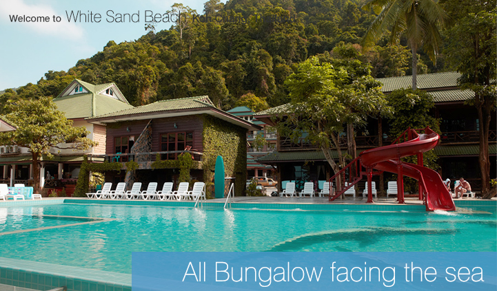
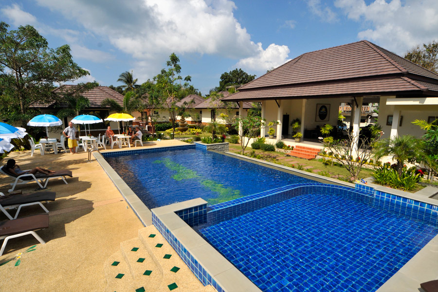
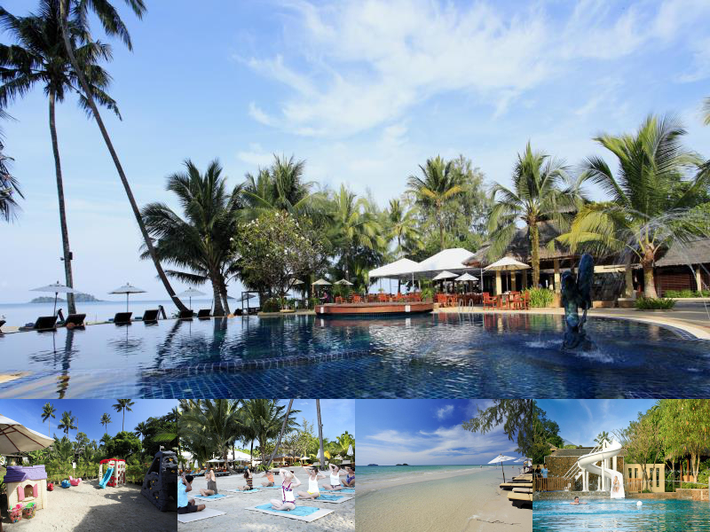

รีสอร์ทในจังหวัดตราด
1.เกาะช้าง ลากูน รีสอร์ท
รีสอร์ทที่มีบรรยากาศร่มรื่นของต้นไม้เขียวครึ้ม สามารถมองเห็นวิวยอดเขาสูง มีทั้งร้านอาหารภายในอาคารและริมชายหาด
ให้บริการอาหารทะเลสดทั้งเมนูไทยและเทศ ภายในมีห้องประชุมสัมมนาไว้อำนวยความสะดวกด้วย เปิดให้จองที่พักแบบห้อง
เดี่ยวสไตล์โรงแรม และห้องพักแยกเป็นหลังสไตล์บังกะโล จุดเด่นอยู่ที่สามารถมองเห็นวิวทิวเขา แถมยังมีบรรยากาศชิล ๆ อีกด้วย
2.คลองพร้าวรีสอร์ท

รีสอร์ทที่ผสมผสานความเป็นธรรมชาติรอบทิศทาง คือ ด้านหน้าเป็นหาดทรายสวยน้ำทะเลงาม
ด้านหลังเป็นภูเขาโอบล้อมบรรยากาศสดชื่น ส่วนด้านข้างมีสายน้ำใสไหลเย็นจากน้ำตกคลองพลู
สิ่งอำนวยความสะดวกมีทั้งสระน้ำและห้องจัดประชุม ภายในห้องพักโอ่อ่าอยู่สบาย เรียกว่าได้ว่าเต็มอิ่มไปกับการตากอากาศสุดประทับใจจริง ๆ
จุดเด่น คือ บรรยากาศ
3.นอร์เรนรีสอร์ท
บังกะโลขนาดกว้างขวางที่ให้ความรู้เหมือนอยู่บ้าน มีบริการร้านอาหาร เครื่องดื่ม และกิจกรรมมากมายให้บริการตามแต่ความสนใจ
มีความเงียบสงบเป็นส่วนตัว จนเป็นที่นิยมของชาวต่างชาติจำนวนมาก ส่วนห้องพักก็มีคุณภาพตามมาตรฐานครบถ้วน
จุดเด่น คือ ความสงบเป็นส่วนตัว
4.เซ็นทารา เกาะช้าง ทรอปิคานา รีสอร์ท

สถานที่พักแห่งนี้มีทั้งสวนสวยและหาดงาม คุณจะเห็นทัศนียภาพน่าชมหลายรูปแบบในที่ที่เดียว ส่วนห้องพักมีความแตกต่างกันไปหลายสไตล์ตามระดับที่เลือก สิ่งอำนวยความสะดวกครบครัน ทั้งบริการอาหาร สปา หรือสระว่ายน้ำ ภายใต้สิ่งปลูกสร้างโดยรวมแบบไทยประยุกต์อันน่าตื่นตาตื่นใจ จุดเด่น คือ ที่พักที่ออกแบบได้มีความเป็นธรรมชาติี่
5.โรงแรมบัฟฟาโลบิล เกาะช้าง
หาดคลองพร้าวขึ้นชื่อเรื่องความเงียบสงบเป็นส่วนตัว เซ็นทารา เกาะช้าง ทรอปิคานา รีสอร์ท
ก็เป็นอีกหนึ่งรีสอร์ทที่สวยงามและความมีระดับ ตกแต่งโดยตั้งใจให้เป็นสภาพแวดล้อมแบบธรรมชาติ
มีสิ่งอำนวยความสะดวกและกิจกรรมมากมาย ในส่วนของห้องพักก็มีลักษณะเดียวกัน คือ มีระเบียงเปิดรับความเป็นธรรมชาติและ
มองเห็นทิวทัศน์ได้แบบเต็ม ๆ
จุดเด่น คือ ความพร้อมและสวยงามของสถานที่
หรือผ่อนคลายที่ลานระเบียงอาบแดดซึ่งมีทิวทัศน์ภูเขา
close